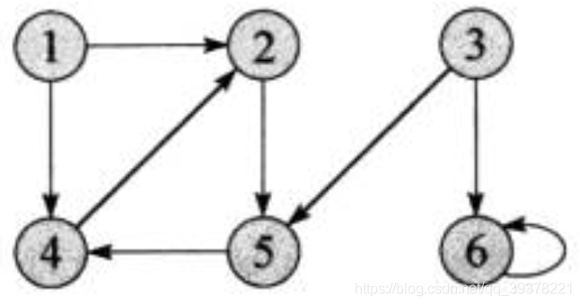
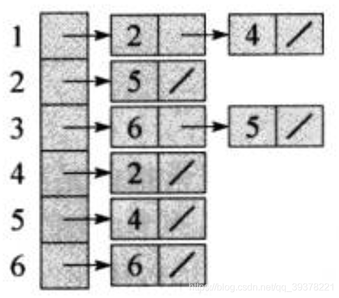
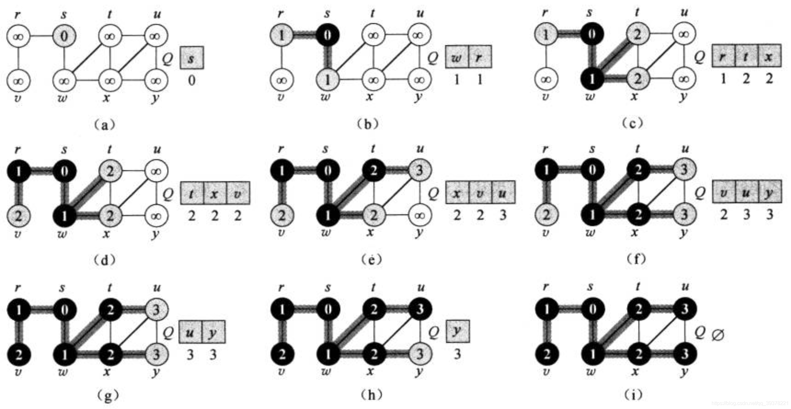
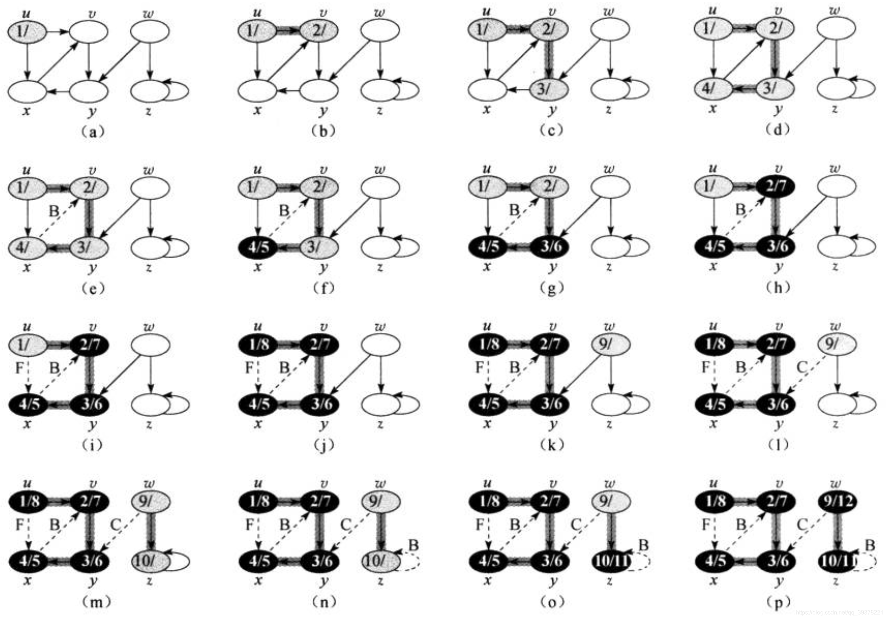

  对邻接链表稍作修改就可以用来表示权重图
邻接链表表示法的优缺点：
优点：鲁棒性很高，可以对其进行简单修改来支持许多其他的图变种。
缺点：无法快速判断一条边$(u, v)$是否是图中的一条边，唯一的办法就是在$Adj[u]$中搜索$v$。
邻接矩阵
邻接矩阵通常用于表示稠密图
无向图的邻接矩阵是一个对称矩阵。因此有时在应用中，只存储对角线及其之上的这部分邻接矩阵，这样存储空间直接减半。下图展示了无向图的邻接矩阵表示法。
下图展示了有向图的邻接矩阵表示法。
邻接矩阵也可以用来表示权重图。可以直接将边$(u, v)\in E$的权重$w(u, v)$直接存储在第$u$行第$v$列上。对于不存在的边则在相应位置记录为$None$
广度优先搜索（$BFS$）
算法简介
给定图$G=(V,E)$和一个可以识别的源节点$s$，广度优先搜索对图$G$中的边进行系统性的探索来发现可以从源节点$s$到达的所有节点。该算法能够计算从源节点$s$到每个可到达的节点的距离（最少的边数），同时生成一棵“广度优先搜索树”。该树以源节点$s$为根节点，包含所有可以从$s$到达的节点$v$，在广度优先搜索树里从节点$s$到节点$v$的简单路径所对应的就是图$G$中从节点$s$到节点$v$的“最短路径”，即包含最少边数的路径，该算法既可以用于有向图，又可以用于无向图。
广度优先搜索在概念 上将每个节点涂上白色、灰色、黑色，它们的意义如下：
白色 ：还未发现的节点灰色 ：已经发现但还未访问的节点黑色 ：已经发现并且访问过的节点
因此初始状态是每个节点都是白色，在访问的过程中会变成灰色和黑色，灰色的节点就是已知和未知两个集合之间的边界。
广度优先搜索的执行过程中还要构造出一棵广度优先树。一开始树只有根节点，就是源节点$s$。在扫描已发现节点$u$的邻接链表时，每当发现一个白色节点$v$就将节点$v$和边$(u, v)$同时加入该树中，这时在树中$u$称为$v$的前驱 父节点
伪代码描述
现给定图$G=(V,E)$是以邻接链表表示的，广度优先搜索算法为图中每个节点赋予一些额外的属性：
$u.color$：代表节点$u$的颜色；
$u.\pi$：代表节点$u$的前驱/父节点，如果节点$u=s$或$u$还未被发现，则$u.\pi=None$；
$u.d$：代表源节点$s$到节点$u$之间的距离。
算法需要借助一个队列$Q$来管理灰色的节点
$BFS(G,s)$：以$s$为源节点对图进行广度优先搜索
1 2 3 4 5 6 7 8 9 10 11 12 13 14 15 16 17 18 19 20 21 22 23 24 for each vertex u ∈ G.V - {s}: //这个for 循环将所有节点都涂成白色，d初始化为无穷，π初始化为None u.color = WHITE u.d = ∞ u.π = None end for s.color = GRAY s.d = 0 s.π = None Q = ∅ //队列 ENQUEUE(Q, s) //源节点入队 while Q != ∅: u = DEQUEUE(Q) //队头结点出队 for each v ∈ G.Adj[u]: //寻找u的邻接链表中的所有节点 if v.color == WHITE: //如果节点是白色，则说明它没被访问过，将它入队，并改变它的属性 v.color = GRAY v.d = u.d + 1 v.π = u ENQUEUE(Q, v) end if end for u.color = BLACK //节点u访问后变成黑色 end while
下图很好地展示了深度优先搜索的整个过程，以及队列中节点的变化情况。

可以看出广度优先搜索的结果依赖于对每个节点的邻接节点的访问顺序，因此生成的广度优先搜索树也可能会不一样，但是计算出来的距离$d$是一样的。
最短路径
定义从源节点$s$到节点$v$的最短路径距离 $\delta(s,v)$为从节点$s$到节点$v$之间所有路径里面最少的边数
从节点$s$到节点$v$的长度为$\delta(s,v)$的路径为$s$到$v$的最短路径 。
广度优先树
如伪代码描述，在广度优先搜索的同时通过节点属性$\pi$来构建了一棵广度优先树。
形式化地说，对于图$G=(V, E)$和源节点$s$，我们定义图$G$的前驱子图 当运行在一个有向或无向图$G=(V,E)$上时，$BFS$过程所建造出来的$\pi$属性使得前驱子图$G_{\pi}=(V_{\pi}, E_{\pi})$成为一棵广度优先树
通过广度优先树可以打印出源节点$s$到节点$v$的一条最短路径上的所有节点，算法的伪代码描述如下：
$PRINT-PATH(G, s, v)$：打印$s$到$v$的一条最短路径上的所有节点。 （递归）
1 2 3 4 5 6 7 8 if v == s: print s else if v.π == None : print "no path from" s "to" v "exists" else PRINT-PATH(G, s, v) print v end if
深度优先搜索（$DFS$）
算法简介
深度优先搜索总是对最近才发现的 节点$v$的出发边进行探索，直到该节点的所有出发边都被发现为止。一旦节点$v$的所有出发边都被发现，搜索则回溯到$v$的前驱节点，来探索该前驱节点的出发边。该过程一直持续到从源节点可以达到的所有节点都被发现为止。（如果还存在没发现的节点，则从这些没发现的节点中选取一个作为源节点，重复这个过程）。
深度优先搜索可能从多个节点重复进行，因此深度优先搜索的前驱子图 形成一个由多棵深度优先树 深度优先森林
与广度优先搜索类似，每个节点的初始颜色都是白色，在节点被发现后变成灰色，在其邻接链表扫描完成后变成黑色
伪代码描述
现给定图$G=(V,E)$是以邻接链表表示的，深度优先搜索赋予的节点属性值如下：
$u.color$：代表节点$u$的颜色；
$u.\pi$：代表节点$u$的前驱/父节点，如果节点$u=s$或$u$还未被发现，则$u.\pi=None$；
$u.d$：时间戳，记录节点$u$第一次被发现的时间（涂上灰色的时候）
$u.f$：时间戳，记录搜索完成对$u$的邻接链表扫描的时间（涂上黑色的时候）
$|V|$个节点中每个节点只能有一个发现时间和一个完成时间，因此这些时间戳都是处于$1$到$2|V|$之间的整数，对于每个节点$u$有：
$DFS(G)$：对图$G$进行深度优先搜索。
1 2 3 4 5 6 7 8 9 10 for each vertex u ∈ G.V: v.color = WHITE //将每个节点涂成白色 v.π = None //前驱节点初始化为空 end for time = 0 //时间戳初始化为0 for each vertex u ∈ G.V: if u.color == WHITE: DFS-VISIT(G, u) //对白色源节点深度优先搜索 end if end for
$DFS-VISIT(G, u)$：以$u$为源节点进行深度优先搜索。
1 2 3 4 5 6 7 8 9 10 11 12 time = time + 1 u.d = time //节点发现时间 u.color = GRAY //第一次发现涂成灰色 for each v ∈ G.Adj[u]: //搜索邻接链表 if v.color == WHITE: //找到一个白色节点就对它深度优先搜索 v.π = u DFS-VISIT(G, v) end if end for u.color = BLACK //其邻接链表中的节点都搜索完毕，涂成黑色 time = time + 1 u.f = time //访问完毕，记录时间
下图很好地展示了一个有向图 进行深度优先搜索的过程。

可以看到上图中的图p，边有虚有实，还有$F,B,C$的标记，下面解释一下这些边的含义：
树边 ：对应于上图中的粗黑线。为深度优先森林$G_{\pi}$中的边。如果节点$v$是因算法对边$(u, v)$的探索而被发现，则$(u, v)$是一条树边。后向边（$back$） ：对应于上图中的$B$。后向边$(u, v)$是将节点$u$连接到其在深度优先树中一个祖先节点$v$的边。由于有向图中可以有自循环，自循环也被认为是后向边。前向边（$forward$） ：对应于上图中的$F$。是将节点$u$连接到其在深度优先树中一个后代节点$v$的边$(u, v)$。横向边（$cross$） ：对应于上图中的$C$。指其他所有的边。这些边可以连接同一棵深度优先树中的节点，只要其中一个节点不是另外一个节点的祖先，也可以连接不同深度优先树中的两个节点
练习
一些可以用作图的DFS、BFS的练习：
如果您喜欢此博客或发现它对您有用，则欢迎对此发表评论。 也欢迎您共享此博客，以便更多人可以参与。 如果博客中使用的图像侵犯了您的版权，请与作者联系以将其删除。 谢谢 ！